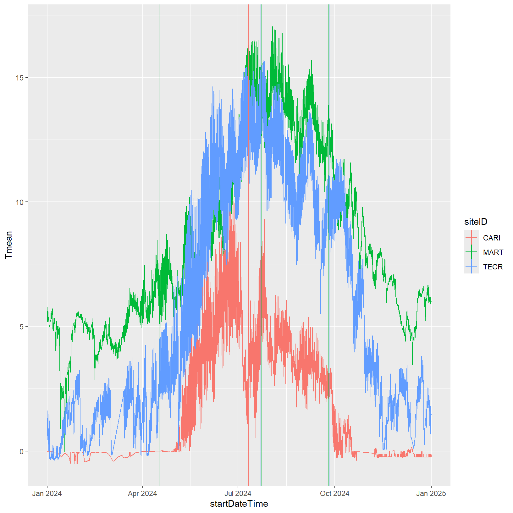
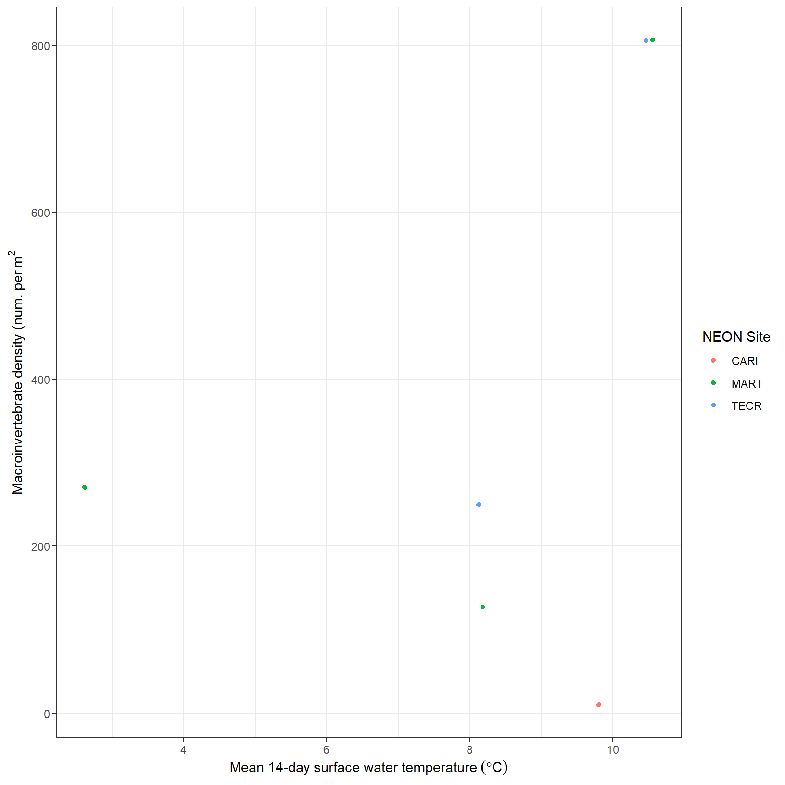
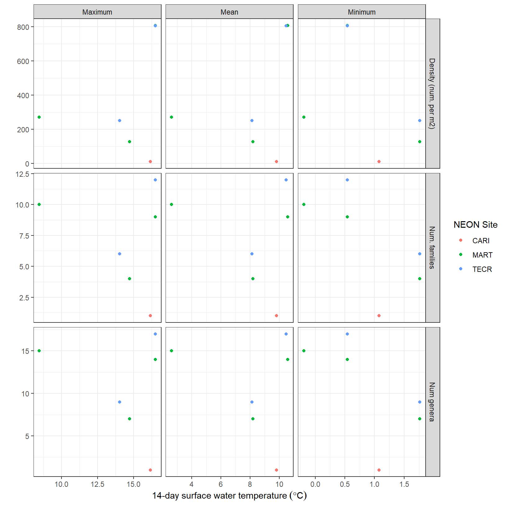

In this lesson we will practice skills from all core lessons to conduct an analysis on NEON data. We will use a reproducible workflow and save our analysis as an RStudio project.
Before beginning this lesson you should have completed all prior lessons and any prerequisites therein.
You have two options for completing this lesson:
Option 1: Follow along with a project folder and code that you can download here.
Option 2: Create the analysis project yourself as you follow along with the lesson.
Before you begin, set up an RStudio project for an organized and reproducible analysis:
code. During this lesson you will create two new code
scripts inside this folder.data. During this lesson you will create several derived
data sets for your analysis. These derived data tables will be saved in
this data folder.output. The code from this lesson will generate figures
that will save into this folder.The final output of this lesson is available in the chapter 8 exercises folder of the workbook.
In this lesson we will be working on an analysis of macroinvertebrate diversity at three NEON aquatic sites: Caribou Creek, Alaska (CARI), Martha Creek, Washington (MART), and Teakettle Creek, California (TECR). You can see a map of these sites on the NEON website. Our goal is to evaluate which site has the highest summer macroinvertebrate diversity and determine whether macroinvertebrate abundance is related to water temperature over the course of the summer.
Before beginning an analysis, it can be extremely useful to map out the steps ahead of time. This will make it easier to translate the analysis to code.
Let’s list our goals for analyzing macroinvertebrate diversity and what we need to do to accomplish each:
Goal 1: Calculate the total number of macroinvertebrate taxa and total abundance of all macroinvertebrates at each site on each sampling date.
inv_fieldData contains data on when and where the
invertebrate samples were collectedinv_taxonomyProcessed contains taxonomic information
about which taxa were collected in each sampleinv_taxonomyProcessed table to calculate the
total abundance and total number of unique taxa in each sample at each
site.
inv_fieldData to identify the date and benthic area
sampled.Goal 2: Calculate water temperature for each macroinvertebrate sample.
Goal 3: Relate macroinvertebrate diversity and abundance to water temperature.
Before we can begin the analysis we need to download the data. To stay organized we will keep the code used to download NEON data separate from the code used to analyze the data.
Create a new R script in the code folder named
01-download_data.R. Putting 01 at the
beginning of the name tells anyone reusing your code that this is the
first step of the analysis. It also will cause your file browser to put
this code file first.
Write an informative header at the top of the script using comments.
To download and combine downloaded data into a single table, we use
the neonUtilities package functions
zipsByTable() followed by stackByTable().
## Example analysis of NEON Data
## Step 1: download data
## Author: YOUR NAME HERE
## Date: TODAYS DATE
## Description: This code downloads and stacks NEON data used
## this analysis. It should only be run once.
# Define dates for download: Jan 1 - Dec 31, 2024
# but we need to start before Jan 1 to get the entire month of January
startdate <- "2023-12-31"
enddate <- "2024-12-31"
# Define the sites to download
# TECR = Teakettle Creek, MART = Martha Creek, CARI = Caribou Creek
sites <- c("TECR", "CARI", "MART")
# Define the directory in which to save the data
# the file path is relative to the working directory
savepath <- "data"
# Download macroinvertebrate data
zipsByProduct(dpID = "DP1.20120.001",
site = sites,
startdate = startdate,
enddate = enddate,
savepath = savepath,
include.provisional = TRUE)
# select y after verifying the data is not too large
# Download surface water temperature data
zipsByProduct(dpID = "DP1.20053.001",
site = sites,
startdate = startdate,
enddate = enddate,
savepath = savepath,
include.provisional = TRUE)
# select y after verifying the data is not too large
# Unzips data and stacks data tables by site
# This will stack all data within each data product folder.
stackByTable(filepath = file.path(savepath, "filesToStack20120"))
stackByTable(filepath = file.path(savepath, "filesToStack20053"))Since we only need the stacked data tables we can remove all of the other files we downloaded. This will save space on the computer and the code will allow us to easily download the data again if needed.
Let’s move and rename the stacked data files with a name that indicates which dates and sites are in the file. Then delete all of the other folders.
You could do this manually using the file browser, or practice your coding skills and use the Terminal. Here are the commands to type into the terminal to accomplish this:
For future reference, we save these commands into a script named
02-move_data.sh in the code folder.
# Move stacked macroinvertebrates data
# into new directory with informative name
mkdir data/stacked20120_2024_TECR-CARI-MART
mv data/filesToStack20120/stackedFiles/* data/stacked20120_2024_TECR-CARI-MART
# Move stacked temperature data
# into new directory with informative name
mkdir data/stacked20053_2024_TECR-CARI-MART
mv data/filesToStack20053/stackedFiles/* data/stacked20053_2024_TECR-CARI-MART
# Remove original downloaded data
rm -r data/filesToStack*Once data are downloaded and tables stacked together, we do not need to run these code again unless we are updating the data from NEON.
Let’s create a new R script for this analysis of macroinvertebrates
and temperature. It is a good idea to keep separate code scripts for
analyses that are distinct from one another. Create a new R script in
the code folder named
03-invert_temperature_analysis.R. Write an informative
header and read in the data tables we will need using the
readTableNEON() function.
## Example analysis of NEON Data
## Step 3: analyze relationship between macroinvertebrates and temperature
## Author: YOUR NAME HERE
## Date: TODAYS DATE
## Description: This code calculates diversity and abundance of
## macroinvertebrates at three NEON sites in 2024. It
## related diversity and abundance to several water
## temperature variables.
## Load packages for the analysis
library(neonUtilities)
library(dplyr)
library(tidyr)
library(ggplot2)
# Read in macroinvertebrate abundance data from data product 20120
inv_fieldData <- readTableNEON(
dataFile = "data/stacked20120_2024_TECR-CARI-MART/inv_fieldData.csv",
varFile = "data/stacked20120_2024_TECR-CARI-MART/variables_20120.csv"
)
# Read in macroinvertebrate taxonomy data from data product 20120
inv_taxa <- readTableNEON(
dataFile = "data/stacked20120_2024_TECR-CARI-MART/inv_taxonomyProcessed.csv",
varFile = "data/stacked20120_2024_TECR-CARI-MART/variables_20120.csv"
)
# Read in 30-min avg surface water temperature data from data product 20053
TSW_30min <- readTableNEON(
dataFile = "data/stacked20053_2024_TECR-CARI-MART/TSW_30min.csv",
varFile = "data/stacked20053_2024_TECR-CARI-MART/variables_20053.csv"
)Now we have three data tables:
TWS_30min = average temperature measurements every
30 minutes
inv_fieldData = data on how each macroinvertebrate
sample was collected
inv_taxa = data on how many individuals belonging to
each taxon and each size class were collected in each sample.
Our next step is to generate a summary table that looks like this:
| SampleID | SiteID | Date | Num. individuals | Num. genera | Num. families |
|---|---|---|---|---|---|
We will first need to decide whether to omit any data. Then we can
group the rows of inv_taxa by the sampleID
column and use summarize() to calculate the total number of
individuals and total number of unique names that appear in the
family and genus columns.
Because it can be challenging to taxonomically identify macroinvertebrate larvae, we will limit this analysis to adults. Adult and larval macroinvertebrate have different ecological roles, therefore focusing on the total abundance of adults separate from larvae also allows us to examine hypotheses more carefully.
First we will calculate the total number of macroinvertebrates collected in each sample.
# Calculate total num. individuals in each sample
abundance <- inv_taxa_adult |>
group_by(sampleID, siteID, collectDate) |>
summarize(tot_abun = sum(estimatedTotalCount))Samples were collected from different areas of the stream, so in order to combine abundance data from different samples collected on the same date, we first need to calculate macroinvertebrate density (individuals per m2).
# Join abundance in each sample with
# benthicArea column from inv_fieldData
# Then calculate density as total abundance / area
abundance <- inv_fieldData |>
select(sampleID, benthicArea) |>
right_join(abundance) |>
mutate(abun_per_m2 = tot_abun / benthicArea)
# Then summarize abundance at each site and sampling date:
# n_samples = number of samples
# abun_per_m2 = average density across all samples
site_summary <- abundance |>
group_by(siteID, collectDate) |>
summarize(n_samples = n(),
abun_per_m2 = mean(abun_per_m2))Here is what we have summarized so far:
| siteID | collectDate | n_samples | abun_per_m2 |
|---|---|---|---|
| CARI | 2024-07-10 20:20:00 | 2 | 10.0000 |
| MART | 2024-04-16 16:30:00 | 8 | 270.5833 |
| MART | 2024-07-23 16:11:00 | 8 | 806.1703 |
| MART | 2024-09-24 16:50:00 | 8 | 126.8598 |
| TECR | 2024-07-22 18:47:00 | 8 | 805.1075 |
| TECR | 2024-09-25 17:43:00 | 8 | 250.0000 |
Next we will calculate taxonomic richness as the number of unique genera and families found on each collection date.
We first need to remove any specimens that could not be accurately
identified. The metadata tells us that the
immatureSpecimens column is Y when the “sample
contains immature specimen(s) for which target level of identification
cannot be achieved”. The distinctTaxon column is
Y when a specimen represents a unique taxon in the sample.
We will use these to filter the data before combining all samples from
the same collection date.
# Remove uncertain taxonomic IDs and non-distinct taxa
# then calculate number of unique genera and families
# for each collection date at each site
diversity <- inv_taxa_adult |>
filter(immatureSpecimen == "N",
distinctTaxon == "Y") |>
group_by(siteID, collectDate) |>
summarize(n_genus = length(unique(genus)),
n_family = length(unique(family)))
# Join diversity and abundance tables, keeping all rows
# in each table
site_summary <- full_join(site_summary, diversity)Here is the final summary table for macroinvertebrate diversity:
| siteID | collectDate | n_samples | abun_per_m2 | n_genus | n_family |
|---|---|---|---|---|---|
| CARI | 2024-07-10 20:20:00 | 2 | 10.0000 | 1 | 1 |
| MART | 2024-04-16 16:30:00 | 8 | 270.5833 | 15 | 10 |
| MART | 2024-07-23 16:11:00 | 8 | 806.1703 | 14 | 9 |
| MART | 2024-09-24 16:50:00 | 8 | 126.8598 | 7 | 4 |
| TECR | 2024-07-22 18:47:00 | 8 | 805.1075 | 17 | 12 |
| TECR | 2024-09-25 17:43:00 | 8 | 250.0000 | 9 | 6 |
The last step is to save this table as a csv file so that we can easily convert it to a table in a document or utilize it in a future analysis.
We now want to calculate several temperature variables from the 30 minute temperature data downloaded from NEON.
Here is what the first 20 rows of these data look like:
| domainID | siteID | horizontalPosition | verticalPosition | startDateTime | endDateTime | surfWaterTempMean | surfWaterTempMinimum | surfWaterTempMaximum | surfWaterTempVariance | surfWaterTempNumPts | surfWaterTempExpUncert | surfWaterTempStdErMean | finalQF | publicationDate | release |
|---|---|---|---|---|---|---|---|---|---|---|---|---|---|---|---|
| D16 | MART | 111 | 100 | 2024-01-01 00:00:00 | 2024-01-01 00:30:00 | 5.826 | 5.819 | 5.833 | 0 | 1800 | 0.139 | 0 | 0 | 20251209T021431Z | RELEASE-2026 |
| D16 | MART | 111 | 100 | 2024-01-01 00:30:00 | 2024-01-01 01:00:00 | 5.819 | 5.810 | 5.828 | 0 | 1800 | 0.139 | 0 | 0 | 20251209T021431Z | RELEASE-2026 |
| D16 | MART | 111 | 100 | 2024-01-01 01:00:00 | 2024-01-01 01:30:00 | 5.806 | 5.794 | 5.817 | 0 | 1800 | 0.139 | 0 | 0 | 20251209T021431Z | RELEASE-2026 |
| D16 | MART | 111 | 100 | 2024-01-01 01:30:00 | 2024-01-01 02:00:00 | 5.794 | 5.786 | 5.801 | 0 | 1800 | 0.139 | 0 | 0 | 20251209T021431Z | RELEASE-2026 |
| D16 | MART | 111 | 100 | 2024-01-01 02:00:00 | 2024-01-01 02:30:00 | 5.779 | 5.767 | 5.791 | 0 | 1800 | 0.139 | 0 | 0 | 20251209T021431Z | RELEASE-2026 |
| D16 | MART | 111 | 100 | 2024-01-01 02:30:00 | 2024-01-01 03:00:00 | 5.758 | 5.744 | 5.772 | 0 | 1800 | 0.139 | 0 | 0 | 20251209T021431Z | RELEASE-2026 |
| D16 | MART | 111 | 100 | 2024-01-01 03:00:00 | 2024-01-01 03:30:00 | 5.738 | 5.731 | 5.748 | 0 | 1800 | 0.139 | 0 | 0 | 20251209T021431Z | RELEASE-2026 |
| D16 | MART | 111 | 100 | 2024-01-01 03:30:00 | 2024-01-01 04:00:00 | 5.729 | 5.719 | 5.737 | 0 | 1800 | 0.139 | 0 | 0 | 20251209T021431Z | RELEASE-2026 |
| D16 | MART | 111 | 100 | 2024-01-01 04:00:00 | 2024-01-01 04:30:00 | 5.714 | 5.704 | 5.724 | 0 | 1800 | 0.139 | 0 | 0 | 20251209T021431Z | RELEASE-2026 |
| D16 | MART | 111 | 100 | 2024-01-01 04:30:00 | 2024-01-01 05:00:00 | 5.703 | 5.695 | 5.710 | 0 | 1800 | 0.139 | 0 | 0 | 20251209T021431Z | RELEASE-2026 |
| D16 | MART | 111 | 100 | 2024-01-01 05:00:00 | 2024-01-01 05:30:00 | 5.686 | 5.673 | 5.700 | 0 | 1800 | 0.139 | 0 | 0 | 20251209T021431Z | RELEASE-2026 |
| D16 | MART | 111 | 100 | 2024-01-01 05:30:00 | 2024-01-01 06:00:00 | 5.668 | 5.656 | 5.678 | 0 | 1800 | 0.139 | 0 | 0 | 20251209T021431Z | RELEASE-2026 |
| D16 | MART | 111 | 100 | 2024-01-01 06:00:00 | 2024-01-01 06:30:00 | 5.653 | 5.644 | 5.662 | 0 | 1800 | 0.139 | 0 | 0 | 20251209T021431Z | RELEASE-2026 |
| D16 | MART | 111 | 100 | 2024-01-01 06:30:00 | 2024-01-01 07:00:00 | 5.642 | 5.631 | 5.652 | 0 | 1800 | 0.139 | 0 | 0 | 20251209T021431Z | RELEASE-2026 |
| D16 | MART | 111 | 100 | 2024-01-01 07:00:00 | 2024-01-01 07:30:00 | 5.625 | 5.612 | 5.637 | 0 | 1800 | 0.139 | 0 | 0 | 20251209T021431Z | RELEASE-2026 |
| D16 | MART | 111 | 100 | 2024-01-01 07:30:00 | 2024-01-01 08:00:00 | 5.600 | 5.576 | 5.617 | 0 | 1800 | 0.139 | 0 | 0 | 20251209T021431Z | RELEASE-2026 |
| D16 | MART | 111 | 100 | 2024-01-01 08:00:00 | 2024-01-01 08:30:00 | 5.559 | 5.535 | 5.582 | 0 | 1800 | 0.139 | 0 | 0 | 20251209T021431Z | RELEASE-2026 |
| D16 | MART | 111 | 100 | 2024-01-01 08:30:00 | 2024-01-01 09:00:00 | 5.511 | 5.485 | 5.540 | 0 | 1800 | 0.139 | 0 | 0 | 20251209T021431Z | RELEASE-2026 |
| D16 | MART | 111 | 100 | 2024-01-01 09:00:00 | 2024-01-01 09:30:00 | 5.467 | 5.449 | 5.489 | 0 | 1800 | 0.139 | 0 | 0 | 20251209T021431Z | RELEASE-2026 |
| D16 | MART | 111 | 100 | 2024-01-01 09:30:00 | 2024-01-01 10:00:00 | 5.430 | 5.408 | 5.452 | 0 | 1800 | 0.139 | 0 | 0 | 20251209T021431Z | RELEASE-2026 |
The first step is to remove data that has been flagged as potentially
incorrect, which is indicated by a value in the finalQF
column that is different from 0.
# Remove erroneous temperature data flagged by finalQF
temp_dat <- TSW_30min |>
filter(finalQF == 0)Recall that there are two sensors recording data, indicated by the
horizontalPosition column:
# How many measurements from each site and horizontal sensor position?
with(TSW_30min,
table(siteID, horizontalPosition)
) horizontalPosition
siteID 101 102 111 112
CARI 17568 17568 0 0
MART 0 0 17568 17568
TECR 17568 17568 0 0# How many measurements from each site and vertical sensor position?
with(TSW_30min,
table(siteID, verticalPosition)
) verticalPosition
siteID 100
CARI 35136
MART 35136
TECR 35136Therefore, we should summarize temperature values using both sensors
at each site. We will group the rows of TSW_30min by site
and sensor position, then calculate mean value across the two sensors.
These mean values will be what we use to calculate different temperature
variables.
# Calculate average temperature measurements between
# upstream and downstream sensors
temp_avg <- temp_dat |>
group_by(siteID, startDateTime) |>
summarize(Tmean = mean(surfWaterTempMean, na.rm = TRUE),
Tmax = max(surfWaterTempMaximum, na.rm = TRUE),
Tmin = min(surfWaterTempMinimum, na.rm = TRUE)) Let’s visualize the data to makes sure everything looks reasonable.
# Make a quick line graph to visualize the time series of
# temperature data availability at each site (line color)
temp_avg |>
ggplot(aes(x = startDateTime, y = Tmean)) +
geom_line(aes(color = siteID)) +
# Add vertical line for each collection date
geom_vline(data = site_summary,
mapping = aes(xintercept = collectDate,
color = siteID))
We can see that the Caribou Creek site (CARI) in Alaska is much cooler with a shorter summer than the Martha Creek, Washington (MART) and Teakettle Creek, California (TECR) sites. The vertical lines show when macroinvertebrate data were collected. We will calculate the mean, minimum and maximum water temperatures during the 2 weeks prior to each of these macroinvertebrate sampling events for each site.
First we need to determine the dates when macroinvertebrates were sampled and calculate the date that is 2 weeks (14 days) prior to each of these dates.
# Extract dates when macroinvertebrates were sampled
# and define dates two weeks prior
sample_dates <- site_summary |>
select(siteID, collectDate) |>
mutate(past_date = collectDate - ddays(14))
# View dates
sample_dates# A tibble: 6 × 3
# Groups: siteID [3]
siteID collectDate past_date
<chr> <dttm> <dttm>
1 CARI 2024-07-10 20:20:00 2024-06-26 20:20:00
2 MART 2024-04-16 16:30:00 2024-04-02 16:30:00
3 MART 2024-07-23 16:11:00 2024-07-09 16:11:00
4 MART 2024-09-24 16:50:00 2024-09-10 16:50:00
5 TECR 2024-07-22 18:47:00 2024-07-08 18:47:00
6 TECR 2024-09-25 17:43:00 2024-09-11 17:43:00Working one row at a time, we need to subset the
TWS_30min data to measurements that occurred at the site
and between the past_date and collectDate,
then calculate the mean, minimum and maximum of the Tmean
column. We can do these calculations and append them as new columns
using the mutate() function.
# Calculate water temperature statistics from mean temperature
# measurements collected between past_date and collectDate
env_14days <- sample_dates |>
rowwise() |> # applies the functions in mutate() one row at at time
mutate(Tmean = mean(subset(temp_avg, siteID == siteID &
startDateTime >= past_date &
startDateTime < collectDate)$Tmean, na.rm = TRUE),
Tmin = min(subset(temp_avg,siteID == siteID &
startDateTime >= past_date &
startDateTime < collectDate)$Tmean, na.rm = TRUE),
Tmax = max(subset(temp_avg, siteID == siteID &
startDateTime >= past_date &
startDateTime < collectDate)$Tmean, na.rm = TRUE)
)Here’s what the environmental data summary table looks like:
| siteID | collectDate | past_date | Tmean | Tmin | Tmax |
|---|---|---|---|---|---|
| CARI | 2024-07-10 20:20:00 | 2024-06-26 20:20:00 | 9.807061 | 1.0780 | 16.1640 |
| MART | 2024-04-16 16:30:00 | 2024-04-02 16:30:00 | 2.613063 | -0.1945 | 8.4615 |
| MART | 2024-07-23 16:11:00 | 2024-07-09 16:11:00 | 10.560192 | 0.5390 | 16.4990 |
| MART | 2024-09-24 16:50:00 | 2024-09-10 16:50:00 | 8.185603 | 1.7650 | 14.7125 |
| TECR | 2024-07-22 18:47:00 | 2024-07-08 18:47:00 | 10.464556 | 0.5390 | 16.4990 |
| TECR | 2024-09-25 17:43:00 | 2024-09-11 17:43:00 | 8.122030 | 1.7650 | 14.0180 |
Finally, we save the data to a csv file for later use.
Now that we have macroinvertebrate community data and environmental data from the same sampling days, we can join the tables together and use the combined data to make a graph.
# Join temperature and macroinvertebrate data
# keeping all rows in site_summary
df <- left_join(site_summary, env_14days)
# Make a scatter plot showing relationship between temperature
# and total abundance
df |>
ggplot(aes(x = Tmean, y = abun_per_m2, color = siteID)) +
geom_point() +
labs(x = expression("Mean 14-day surface water temperature"~(degree*C)),
y = expression("Macroinvertebrate density (num. per"~m^2),
color = "NEON Site") +
theme_bw() # makes black and white color scheme
Use ggsave() to save this figure to the
output folder.
Error in `ggsave()`:
! Cannot find directory 'output'.
ℹ Please supply an existing directory or use `create.dir = TRUE`.We could make individual graphs one by one. Or, ggplot()
can make a multipanel graph that shows different sites or variables if
we add the facet_grid() function. So, if we want to have
each panel of the graph show a different temperature variable, we need
all of the temperature variables (Tmean, Tmin,
Tmax) to show up in a single column, with another column to
identify which variable the value came from. This means we need to
convert the data to long format. A similar argument applies to the
macroinvertebrate variables. We will use pivot_longer()
twice to convert both sets of variables to long format.
# Pivot to long format to make multipanel graphs
# Each row is a combination of a temperature an macroinvertebrate variable
df_long <- df |>
# Put all temperature variables in the T_var column
pivot_longer(starts_with("T"), names_to = "T_var", values_to = "Temperature") |>
# Put all macroinvertebrate variables in the M_var column
pivot_longer(c("abun_per_m2", "n_genus","n_family"), names_to = "M_var", values_to = "value")
# View long format data
head(df_long)# A tibble: 6 × 8
# Groups: siteID [1]
siteID collectDate n_samples past_date T_var Temperature
<chr> <dttm> <int> <dttm> <chr> <dbl>
1 CARI 2024-07-10 20:20:00 2 2024-06-26 20:20:00 Tmean 9.81
2 CARI 2024-07-10 20:20:00 2 2024-06-26 20:20:00 Tmean 9.81
3 CARI 2024-07-10 20:20:00 2 2024-06-26 20:20:00 Tmean 9.81
4 CARI 2024-07-10 20:20:00 2 2024-06-26 20:20:00 Tmin 1.08
5 CARI 2024-07-10 20:20:00 2 2024-06-26 20:20:00 Tmin 1.08
6 CARI 2024-07-10 20:20:00 2 2024-06-26 20:20:00 Tmin 1.08
# ℹ 2 more variables: M_var <chr>, value <dbl>Finally, we can use this long format data to make a multipanel graph.
Notice that we use the mutate() function first to change
the levels of the M_var and T_var columns to
be text that is easier to understand on the graph.
# Use the long format data to make a graph
df_long |>
# use informative names for variables
mutate(M_var = factor(M_var,
labels = c("Density (num. per m2)", "Num. families", "Num genera")),
T_var = factor(T_var,
labels = c("Maximum", "Mean", "Minimum"))
) |>
# set up graph axes
ggplot(aes(x = Temperature, y = value, color = siteID)) +
# make separate plots for each macroinvertebrate variable and temp variable
facet_grid(M_var ~ T_var, scales = "free") +
# add points
geom_point() +
# add axis labels
labs(x = expression("14-day surface water temperature"~(degree*C)),
y = "",
color = "NEON Site") +
theme_bw() # makes black and white color scheme
Finally save the graph as an svg file. This is a vector format file that can be easily edited by programs such as Inkscape, Adobe Illustrator or Vectr.
# Save as svg - editable in Inkscape
ggsave("output/macroinvert_vs_temperature.svg", height = 7, width = 8)And now the analysis is complete- time to be a scientists an interpret the patterns!
Introduction to Computing in R with NEON